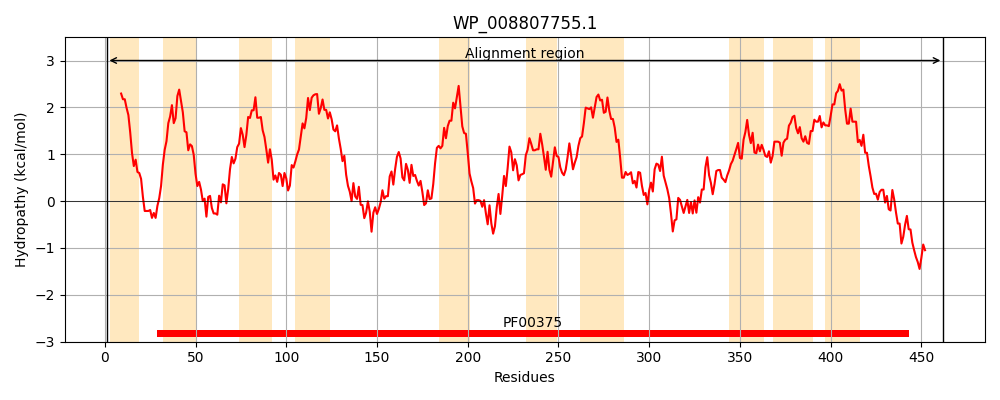
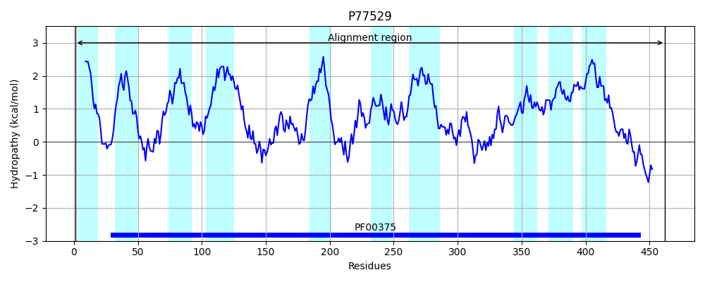
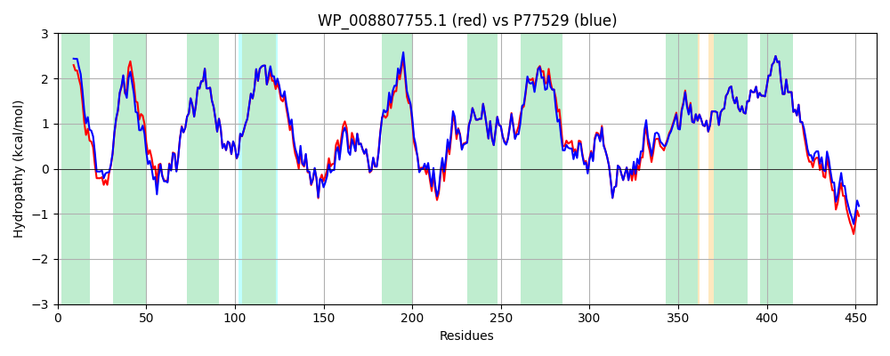

Hit Accession: P77529
Hit TCID: 2.A.23.1.8
Hit Description: gnl|BL_ORD_ID|11521 gnl|TC-DB|P77529|2.A.23.1.8 Uncharacterized symporter YdjN OS=Escherichia coli (strain K12) GN=ydjN PE=3 SV=1
Mach Len: 462
e:0.000000
Query TMS Count : 10
Hit TMS Count: 10
TMS-Overlap Score: 9.800000
Predicted Substrates:CHEBI:4052;cystine
BLAST Alignment:
Score: 2122 , Bit scores: 822 bits, E-value: 0.0e+00, Alignment length: 462, Percentage identity: 91
Query: 1 MNFPLIANVVVFAVLLFALGQTRHKQWSLARKVLVGLAIGVVFGLALQLIYGSDSQVLKDSIQWFNIVGNGYVQLLQMIVMPLVFASILSAVARLHNASQLGKISFLSIGTLLFTTLIAALVGVLVTNMFGLTAEGLVQGSAETARLNAIQSNYVGKVADLSVPQLILSFVPKNPFADLTGANPTSIISIVIFSAFLGVAALKLLKEDVEKGQRVLTAIDTLQGWVMKLVRLVMQLTPYGVLALMTKVVAGSNLQDIIKLGGFVVASYIALGIMFVVHGLLLAINGISPLKYFRKVWPVITFAFTSRSSAASIPLNVEAQTRRLGVPESIASFSASFGATIGQNGCAGIYPAMLAVMVAPTVGINPLDPMWIATLVGIVTVSSAGVAGVGGGATFAALIVLPAMGLPVTLVALLISVEPLIDMGRTALNVNGSMTAGTLTSQWLRQTDKSIFDSEEEAELAH 462
MNFPLIAN+VVF VLLFAL QTRHKQWSLA+KVLVGL +GVVFGLAL IYGSDSQVLKDS+QWFNIVGNGYVQLLQMIVMPLVFASILSAVARLHNASQLGKISFL+IGTLLFTTLIAALVGVLVTN+FGLTAEGLVQG AETARLNAI+SNYVGKV+DLSVPQL+LSF+PKNPFADLTGANPTSIIS+VIF+AFLGVAALKLLK+D KG+RVL AIDTLQ WVMKLVRLVMQLTPYGVLALMTKVVAGSNLQDIIKLG FVVASY+ L IMF VHG+LL ING+SPLKYFRKVWPV+TFAFTSRSSAASIPLNVEAQTRRLGVPESIASF+ASFGATIGQNGCAG+YPAMLAVMVAPTVGINPLDPMWIATLVGIVTVSSAGVAGVGGGATFAALIVLPAMGLPVTLVALLISVEPLIDMGRTALNV+GSMTAGTLTSQWL+QTDK+I DSE++AELAH
Sbjct: 1 MNFPLIANIVVFVVLLFALAQTRHKQWSLAKKVLVGLVMGVVFGLALHTIYGSDSQVLKDSVQWFNIVGNGYVQLLQMIVMPLVFASILSAVARLHNASQLGKISFLTIGTLLFTTLIAALVGVLVTNLFGLTAEGLVQGGAETARLNAIESNYVGKVSDLSVPQLVLSFIPKNPFADLTGANPTSIISVVIFAAFLGVAALKLLKDDAPKGERVLAAIDTLQSWVMKLVRLVMQLTPYGVLALMTKVVAGSNLQDIIKLGSFVVASYLGLLIMFAVHGILLGINGVSPLKYFRKVWPVLTFAFTSRSSAASIPLNVEAQTRRLGVPESIASFAASFGATIGQNGCAGLYPAMLAVMVAPTVGINPLDPMWIATLVGIVTVSSAGVAGVGGGATFAALIVLPAMGLPVTLVALLISVEPLIDMGRTALNVSGSMTAGTLTSQWLKQTDKAILDSEDDAELAH 462 | Protein Hydropathy Plots: |
|---|
|  |  |
Pairwise Alignment-Hydropathy Plot:
|
|---|
|  |